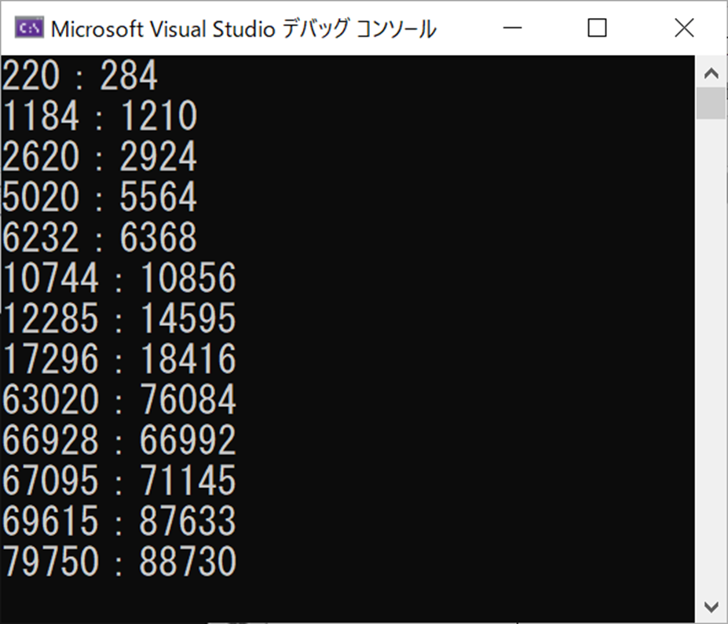

メモ：C アルゴリズム 友愛数
友愛数 を求めるという課題があったが、自分のコードと回答例を比較してアルゴリズムスキル向上のために記録として残す
自分のコード
test.c
test.c の実行結果

友愛数はペアなので、何もしないと（220:284 284:220）のように重複したペアも表示してしまう。
なので配列を作ってチェックさせてみたが、回答例を見たらそんなことをしなくても簡単にクリアできる事だった…
test.c 回答例を基に修正
表示する時のif文の条件式に、i < sum を加えればすむ話だった
これなら、完全数を除く部分のコードもいらないのでスッキリする
求められる条件をなるべく単純に考える習慣がまだついていないな…
まだ意味のわからない部分
条件式がやや複雑な気がするけど、なんでこうしなくてはいけないのかがわからない
あとで検証しよう
参考になったサイト
友愛数や婚約数や社交数って知っていますか－数学の世界にも洒落た名称の概念があるんです－